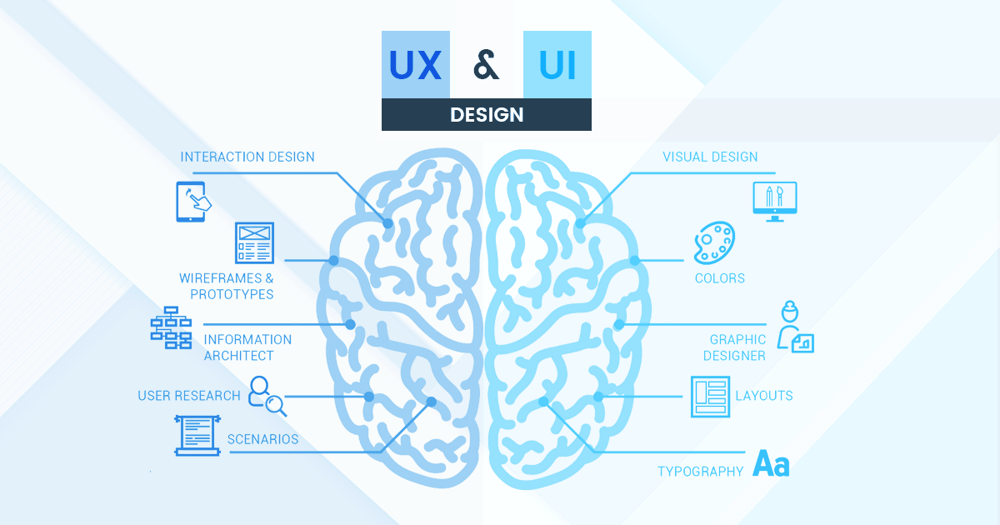

UX Design leader Cerejo outlines the benefits of rapid prototyping and key definitions such as types of fidelity and steps in the prototyping process.
Designing Better With Rapid PrototypingThe Webmarketers blog covers the ten principles of good user interface design, including practical elements like accessibility functions, and deeper elements such as empathy.
10 Principles of Good User Interface Design 